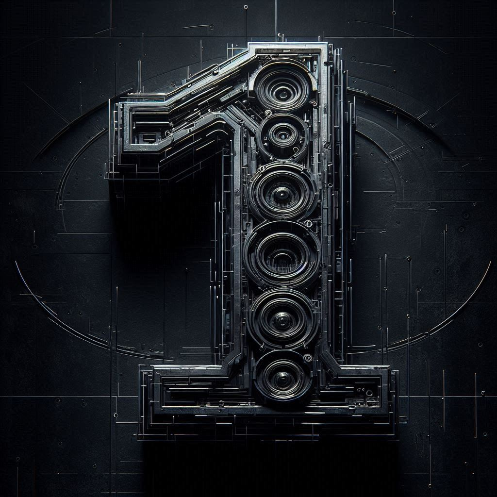

Didier Knecht
Techno Mixes

Didier Knecht #1 - 20251017
Download
View the tracklisting
- Alias — Alex Bau — KONEKT CROATIA 011
- Tactics — Gary Beck — CODE RECORDS 39
- Bushido — Milo Raad — MORD 112
- Vagabond — Veit — INHERIT 501
- Mind Games — Kabay — BIPOLAR DISORDER RECORDS 037
- Fractured Grain — Bjoern Torwellen — KD RAW 127
- Selective Perception — Kaiserdisco — KD RAW 124
- Dub Dissonance — Jancen — FIGURE X47
- Zig Zag — Len Faki — FIGURE X48
- Surge — Rocko Garoni & Red Rooms — SOMA RECORDS 678D
- Dark Channel — Slam — SOMA RECORDS DA128
- Don't Play 100 — Toru Ikemoto — SYXT 038
- Psykick — Phil Berg — PHORUM RECORDS 001
- R25 — RNGD — SOMA RECORDS 670D
- False Signal — AeFe — CHILDREN OF TOMORROW 116
- Poon Town — Cari Lekebusch — H-PRODUCTIONS X160
- Disposed — Connor Wall — WSNWG - BACK TO ZERO 011
- Groove Elements — Alex Vigo & Disaxter — DkN SELECTIONS 060
- Tibanna — Brian Sanhaji & Forms & Monoloc — SENSOR 012
- Prime — Nicolas Bougaïeff — NOVAMUTE 198
- Video Siren (Remco Beekwilder Remix) — Gary Beck — BEK AUDIO 061
- Flicker — Slam — SOMA RECORDS 677D
- Club 41 — The Sixth Sense — CHILDREN OF TOMORROW 11A
- Run to Failure — VXLR — EVILGROOVE RECORDS 008
- Morganatic — Slam — SOMA RECORDS DA128
- Organelle — Nicolas Bougaïeff — NOVAMUTE 199
- El Nexo — Ribé & Roll Dann — KLOCKWORKS 040
- Wrecking — Ray Kajioka & Heiko Laux — KANZLERAMT 89
- Secuela — Ribé & Roll Dann — KLOCKWORKS 040
- New Moon — AeFe — FANZINE 007
- Scale — DJ Hell — ACTIVITY FM 001
- Evolve — Franz Jäger — SYXT 006
- Pleasure Pulse (Groef Remix) — Kabay — BIPOLAR DISORDER RECORDS 037
- Yawara — Milo Raad — MORD 112
- Elytra — Phil Berg — PHORUM RECORDS 001
- Diluted — Sira — X/Y/Z/Secret 009
- Don't Play 171 — Toru Ikemoto — CONUNDRUM RECORDS 006
- Stronger — Thimble — INNERVISIONS 112
- Arkanoid — Ramon Tapia — SAY WHAT? 221
- Yah — Jonathan Kaspar — COCOON RECORDINGS DIGITAL 179A
- Late Night Rave (Agent Orange DJ Remix) — Melvin Spix — SWAY 77
- Frustration — AeFe — DkN SELECTIONS 062
- Nocturnal — Arnaud Le Texier — SOMA RECORDS 672D
- Lucid Emergence (Lobster Remix) — Kabay — BIPOLAR DISORDER RECORDS 037
- Behind the Eight Bball — Milo Raad — MORD 112
- Detour — Milo Raad — MORD 112
- Mutual Hate — GCOD — EVILGROOVE RECORDS 008
- Remember Me — Cornucopia — EARLY MORNING 005D
- Hopper — Gary Beck — MUTUAL RYTM 003
- 1979 — Hertz — SWAY 78
- The Bamboozler — Mikrotakt — H-PRODUCTIONS X158
- Organelle — Nicolas Bougaïeff — NOVAMUTE 199
- Immoral — RNGD — SOMA RECORDS 670D
- Applications — Shlomi Aber — LOST EPISODE 7
- Passive Aggressive — The Advent — TRUNCATE DGTL 44
- Use It, Lose It — Slam — SOMA RECORDS DA128
- Silence of the Soul (Yuki Seki Remix) — Toru Ikemoto — AUM RECORDINGS 015
- Deviant — Lego — H-PRODUCTIONS X162
- The Bamboozler — Mikrotakt — H-PRODUCTIONS X158
- Delta — Rocko Garoni & Red Rooms — SOMA RECORDS 678D
- Flash Point — Milo Raad — MORD 112
- Epsilon (Ray Kajioka Remix) — Housemeister — GND RECORDS 035
- Self Service — Doug Cooney — DIFFUSE REALITY RECORDS 1178
- Jack The Groove — Bushwacka! — NU GROOVE RECORDS 167D
- Seeing Your Face — AeFe — DkN SELECTIONS 061
- Pulsar — Arnaud Le Texier — SOMA RECORDS 672D
- Geeks On Hubbard (Feat. DJ Rush) — Deas — ARTS 052
- Vicious Game 2018 (Mark Broom V2 Remix) — David Carretta — GND RECORDS